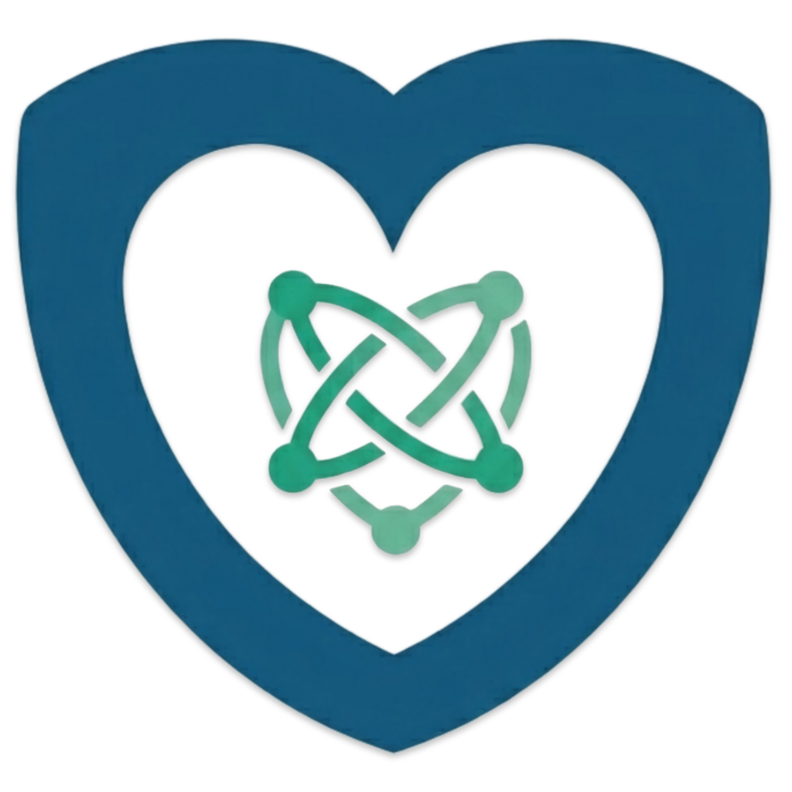

IL PROGETTO CUORE SICURO
Cuore Sicuro è una piattaforma web informativa dedicata al contrasto del cyberbullismo, ideata per offrire supporto concreto e orientamento a chiunque si trovi ad affrontare questa problematica.
Il sito si pone come un punto di riferimento accessibile e sicuro, progettato per permettere a studenti, genitori ed educatori di approfondire le proprie conoscenze sul fenomeno del cyberbullismo in modo semplice, immediato e guidato.

I NOSTRI OBIETTIVI
- Informazione e Prevenzione: Divulgare contenuti chiari e accessibili sul fenomeno del cyberbullismo, offrendo strumenti pratici per aiutare l'utente a riconoscere, prevenire e gestire situazioni di pericolo online.
- Supporto Specializzato: Garantire un canale di comunicazione directo tra l'utente e professionisti qualificati, permettendo di ottenere consigli tempestivi in situazioni di disagio o emergenza.
- Sicurezza e Riservatezza: Mettere al centro dell'esperienza digitale la tutela dell'utente. Ogni interazione trasmessa tramite il form di contatto viene gestita con la massima riservatezza.
- Accessibilità e Tempestività: Abbattere le barriere comunicative offrendo un supporto immediato e favorendo un intervento rapido in caso di necessità.
A CHI CI RIVOLGIAMO
- Studenti e Giovani: Il sito funge da "luogo sicuro" dove reperire informazioni, capire che non sono soli e ottenere il supporto necessario.
- Genitori e Tutori: Offriamo una guida chiara per riconoscere i segnali d'allarme, comprendere il linguaggio del web e capire come intervenire efficacemente.
- Docenti ed Educatori: Una risorsa di supporto alla didattica per trovare indicazioni su come gestire eventuali episodi riscontrati nel contesto scolastico.
- Cittadini e Osservatori: Persone interessate ad approfondire il tema della sicurezza digitale che desiderano informarsi per diventare parte attiva nella prevenzione.
IL NOSTRO SUPPORTO DIRETTO
Oltre a fornire notizie aggiornate e approfondimenti, attraverso un modulo di contatto dedicato gli utenti hanno la possibilità di comunicare in forma privata con figure specializzate. Questa funzionalità permette di ricevere consigli personalizzati e orientamento su come comportarsi per proteggere la propria serenità digitale.
Inoltre, per gestire le situazioni che richiedono un intervento tempestivo, abbiamo implementato una funzione di "supporto immediato" che permette di attivare una sessione di chat live con uno specialista. Questo strumento garantisce che nessuno debba affrontare una crisis da solo o nell'attesa di una risposta via email.

HAI BISOGNO DI AIUTO?
Non sei solo. Se stai affrontando una situazione difficile o vuoi semplicemente maggiori informazioni, compila il nostro form per metterti in contatto con noi in modo totalmente sicuro.
COMPILA IL FORM